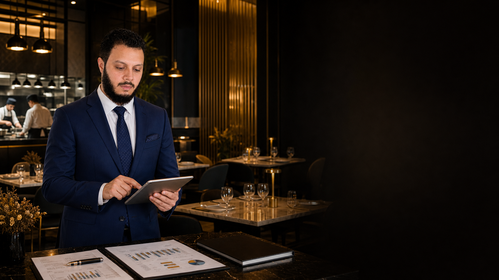

تشغيل وتطوير المطاعم
إعادة تنظيم دورة التشغيل، ضبط الإجراءات اليومية، وبناء نظام متابعة عملي للإدارة.
اطلب الخدمة ←
استشارات مطاعم مبنية على الأرقام والواقع
نساعد أصحاب المطاعم على ضبط التشغيل والتكاليف، تقليل الهدر، وتطوير فرق العمل عبر تحليل عملي وقرارات واضحة قابلة للتنفيذ.
شريكك في القرار
كل مطعم له أرقامه وتحدياته. لذلك نبدأ بفهم واقع التشغيل، ثم نحدد نقاط تسرب الأرباح وفرص التحسين ونبني خطة تناسب مشروعك فعلًا.
مجالات الخبرة
من دراسة الفكرة قبل الاستثمار، إلى إعادة ضبط مطعم قائم ورفع كفاءته وربحيته.
إعادة تنظيم دورة التشغيل، ضبط الإجراءات اليومية، وبناء نظام متابعة عملي للإدارة.
اطلب الخدمة ←تحليل الفكرة والسوق والتكاليف والإيرادات المتوقعة قبل اتخاذ قرار الاستثمار.
اطلب الخدمة ←قراءة مالية وتشغيلية تكشف القيمة الحقيقية للمشروع والفرص والمخاطر قبل الصفقة.
اطلب الخدمة ←مراجعة حالة المعدات والتجهيزات وقيمتها ومدى ملاءمتها لطبيعة وحجم التشغيل.
اطلب الخدمة ←حساب تكلفة كل صنف، مراجعة التسعير، وتحسين هامش الربح بناءً على بيانات صحيحة.
اطلب الخدمة ←تحديد مصادر الفاقد ووضع إجراءات تقلل الخسائر المتكررة في المواد والتشغيل.
اطلب الخدمة ←توزيع مسؤوليات أوضح، رفع كفاءة الفريق، وتحسين المتابعة اليومية ومؤشرات الأداء.
اطلب الخدمة ←تقييم مباشر في الموقع وتوصيات تشغيلية واضحة وقابلة للتطبيق في جميع مناطق المملكة.
اطلب الخدمة ←منهجية العمل
لا نقدم تقريرًا نظريًا يوضع على الرف. نعمل معك على الأولويات التي تصنع فرقًا حقيقيًا في التشغيل والأرباح.
ناقش تحديات مطعمك معنا ←فهم الوضع الحالي والتحديات والأهداف من خلال جلسة مركزة أو زيارة ميدانية.
مراجعة التكاليف والأصناف والهدر والمبيعات وأداء الفريق ومسار الخدمة.
ترتيب الأولويات ووضع إجراءات تنفيذية واضحة ومؤشرات لقياس التحسن.
تواصل معنا
اشرح لنا التحدي الحالي، وسنتواصل معك لتحديد أفضل طريقة للبدء.